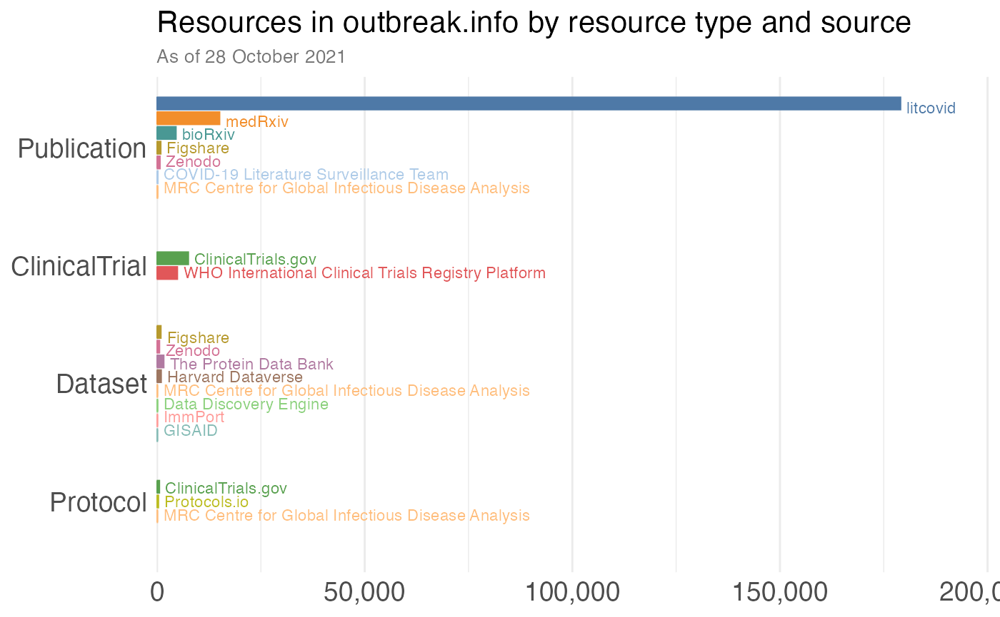

Accessing the data in outbreak.info’s Research Library
outbreak.info’s Research Library allows you to track the vast amount of research being produced by the community on COVID-19, including publications, clinical trials, datasets, protocols, and more. The metadata for these resources are pulled every day across a series of data sources and combined and standardized for easy searching across data asset.
Here, we’ll show how to access and filter these metadata about COVID-19 and SARS-CoV-2 research.
Before we start…
Import the packages we’ll use.
Note that unlike the SARS-CoV-2 Variant Prevalence functions, none of the Research Library functions or anything in this vignette require GISAID authentication through the authenticateUser() function.
Access how many resources are collected by date
How has the amount of research changed over time? We can pull the resources added each week to understand the scale of the vast amount of COVID-19 research being produced since the beginning of the pandemic.
# query the API to get the resources by date. Filter to > 1 January 2020, to remove the weirdos that slipped through.
resources_by_date = getResourcesData(query = "date:[2020-01-01 TO *]", fields = "date", fetchAll = TRUE)
# roll up the number of resources by week
resources_by_date = resources_by_date %>%
mutate(year = lubridate::year(date),
iso_week = lubridate::isoweek(date))
# count the number of new resources per week.
resources_per_week = resources_by_date %>%
count(iso_week, year) %>%
# convert from iso week back to a date
mutate(iso_date = lubridate::parse_date_time(paste(year,iso_week, "Mon", sep="-"), "Y-W-a"))
#> Warning in strptime(.enclose(x), .enclose(fmt), tz): (0-based) yday 369 in year
#> 2020 is invalid
#> Warning in strptime(.enclose(x), .enclose(fmt), tz): (0-based) yday 367 in year
#> 2021 is invalid
#> Warning in strptime(.enclose(x), .enclose(fmt), tz): (0-based) yday 369 in year
#> 2020 is invalid
#> Warning in strptime(.enclose(x), .enclose(fmt), tz): (0-based) yday 367 in year
#> 2021 is invalid
#> Warning in strptime(.enclose(x), .enclose(fmt), tz): (0-based) yday 369 in year
#> 2020 is invalid
#> Warning in strptime(.enclose(x), .enclose(fmt), tz): (0-based) yday 367 in year
#> 2021 is invalid
#> Warning in strptime(.enclose(x), .enclose(fmt), tz): (0-based) yday 369 in year
#> 2020 is invalid
#> Warning in strptime(.enclose(x), .enclose(fmt), tz): (0-based) yday 367 in year
#> 2021 is invalid
#> Warning: 2 failed to parse.
# plot!
fill_color = "#66c2a5"
ggplot(resources_per_week, aes(x = iso_date, y = n)) +
geom_bar(fill = fill_color, stat="identity") +
ggtitle("COVID-19 resources have rapidly proliferated", subtitle="Number of publications, datasets, clinical trials, and more added each week to outbreak.info's Research Library") +
theme_minimal() +
theme(
text = element_text(family="DM Sans"),
axis.title = element_blank(),
axis.text = element_text(size = 16),
plot.title = element_text(size = 20),
plot.subtitle = element_text(colour="#777777", size=9)
) +
scale_y_continuous(label=scales::comma) +
scale_x_datetime(limits = c(min(resources_per_week$iso_date, na.rm = T), max(resources_per_week$iso_date, na.rm = T)), date_labels = "%b %Y")
#> Warning: Removed 2 rows containing missing values (position_stack).
#> Warning: Removed 2 rows containing missing values (geom_bar).
Count how many resources there are by type
# We COULD grab the resources by querying the index just to pull out the `@type` field, and then using dplyr to summarise the data.
resources_by_type_slow_way = getResourcesData(fields="@type", fetchAll = TRUE)
resources_by_type_slow_way_summary = resources_by_type_slow_way %>% count(`@type`) %>% arrange(desc(n))
knitr::kable(resources_by_type_slow_way_summary)| @type | n |
|---|---|
| Publication | 200078 |
| ClinicalTrial | 12280 |
| Dataset | 3868 |
| Protocol | 752 |
| ImageObject | 227 |
| SoftwareSourceCode | 197 |
| CreativeWork | 155 |
| PresentationDigitalDocument | 97 |
| MediaObject | 52 |
| Book | 25 |
| Website | 21 |
| Analysis | 12 |
| Educational Resource | 11 |
| NA | 9 |
| Report | 7 |
| WebPage | 7 |
| Conference Contribution | 3 |
| Article | 1 |
| BreadcrumbList | 1 |
| Photograph | 1 |
# ... but the API actually will count variables for us, which is loads faster.
# Note: we'll need to change `facet_size` from its default of 10, to make sure all the types are returned.
resources_by_type_response = getResourcesData(facets="@type", facet_size = 50, size = 0)
# The results are stored in `resources_by_type_response$facets$`@type`$terms`:
resources_by_type = resources_by_type_response$facets$`@type`$terms
# And we get the same data, but without having to make those lengthy calls to grab all the data and then count them.
knitr::kable(resources_by_type %>% select(term, count))| term | count |
|---|---|
| Publication | 200078 |
| ClinicalTrial | 12280 |
| Dataset | 3868 |
| Protocol | 752 |
| ImageObject | 227 |
| SoftwareSourceCode | 197 |
| CreativeWork | 155 |
| PresentationDigitalDocument | 97 |
| MediaObject | 52 |
| Book | 25 |
| Website | 21 |
| Analysis | 12 |
| Educational Resource | 11 |
| Report | 7 |
| WebPage | 7 |
| Conference Contribution | 3 |
| Article | 1 |
| BreadcrumbList | 1 |
| Photograph | 1 |
Count how many resources there are by type AND by data source
getSources = function(type) {
facets = getResourcesData(types=c(type), facets="curatedBy.name", facet_size = 50, size = 0)
terms = facets$facets$curatedBy.name$terms %>%
mutate(type = type)
}
# Map over each of the types to get the source counts for each
resources_by_source = map_df(resources_by_type %>% pull(term), getSources)
# Get the resources by source, to order the totals
resources_by_curator = getResourcesData(facets="curatedBy.name", facet_size = 50, size = 0)
resources_by_curator = resources_by_curator$facets$curatedBy.name$terms$term
# Group together fields into "other" category
resources_by_source_grouped = resources_by_source %>%
mutate(type_grouped = ifelse(type %in% c("Publication", "ClinicalTrial", "Dataset", "Protocol"),
type, "Other")) %>%
group_by(type_grouped, term) %>%
summarise(count = sum(count))
#> `summarise()` has grouped output by 'type_grouped'. You can override using the `.groups` argument.
# Set the levels, so the bar plot sorts by order.
types = c("Other", resources_by_type %>% pull(term) %>% rev())
resources_by_source_grouped$type_grouped = factor(resources_by_source_grouped$type_grouped, types)
resources_by_source_grouped$term = factor(resources_by_source_grouped$term, resources_by_curator %>% rev())
COLORPALETTE = c("#4E79A7", "#f28e2b", "#59a14f","#e15759", "#499894","#B6992D", "#D37295", "#B07AA1","#9D7660", "#bcbd22",
"#aecBe8", "#FFBE7D", "#8CD17D", "#FF9D9A", "#86BCB6", "#F1CE63","#FABFD2", "#D4A6C8", "#D7B5A6", "#79706E")
names(COLORPALETTE) = resources_by_curator
# Plot the results -- full scale to encapsulate the LitCovid responses
ggplot(resources_by_source_grouped %>% filter(type_grouped != "Other"),
aes(x = type_grouped, y = count, fill = term, colour = term)) +
geom_col(position = position_dodge2(width = 0.9, preserve = "single", padding = 0.2), width = 1) +
geom_text(aes(y = count + 1500, label = term), position = position_dodge2(width = 0.9, preserve = "single", padding = 0.2),
size = 3, hjust = 0) +
scale_y_continuous(labels=scales::comma, expand = c(0, 100, 0, 20000)) +
scale_colour_manual(values = COLORPALETTE) +
scale_fill_manual(values = COLORPALETTE) +
coord_flip() +
ggtitle("Resources in outbreak.info by resource type and source", subtitle = paste0("As of ", format(Sys.time(), "%d %B %Y"))) +
theme_minimal() +
theme(legend.position = "none", panel.grid.major.y = element_blank(), axis.title = element_blank(),
axis.text = element_text(size = 14),
plot.title = element_text(size = 16),
plot.subtitle = element_text(colour="#777777", size = 10))
Some notes on constructing queries
Our API is built off Elasticsearch, which utilizes Lucene syntax to create queries. As a result, there’s a lot of different and complex queries you can run, if you know the right syntax. Here are a few examples of what you can do; see also the Elasticsearch query syntax for more documentation.
General queries
This will search for any use of the term within all the metadata, including its name, description, authors, etc. You can also combine terms using AND and/or OR (must be capitalized). Note that spaces, dashes, and other punctuation are automatically treated as OR combinations. While periods . are used in field names to indicate object structure/nesting (like journalName:Nature; see “Searching specific terms”), they will be treated as any other punctuation in general queries. Wildcards * can be used (more on this later). Adding quotes will search for that exact term. Note that all searches are case insensitive, so looking for “Pfizer” or “pfizer” will give you the same results.
# Basic query: look for anything that mentions "Pfizer"
query1 = getResourcesData(query = "Pfizer", fetchAll = TRUE)
print(paste0("There are ", query1 %>% nrow() %>% format(big.mark=",")," resources containing the term 'Pfizer'"))
#> [1] "There are 1,184 resources containing the term 'Pfizer'"
# Slightly more complicated: lets look what happens when we search for "Pfizer-BioNTech".
query2 = getResourcesData(query = "Pfizer-BioNTech", fetchAll = TRUE)
print(paste0("There are ", query2 %>% nrow() %>% format(big.mark=",")," resources containing the term Pfizer-BioNTech. When a search isn't a single word (or is combined by punctuation like hyphens), the words are treated separately, so the results are for any document that has Pfizer OR BioNTech."))
#> [1] "There are 1,227 resources containing the term Pfizer-BioNTech. When a search isn't a single word (or is combined by punctuation like hyphens), the words are treated separately, so the results are for any document that has Pfizer OR BioNTech."
# Let's check that explicitly, by combining Pfizer and BioNTech by `OR`.
query3 = getResourcesData(query = "Pfizer OR BioNTech", fetchAll = TRUE)
print(paste0("There are ", query3 %>% nrow() %>% format(big.mark=",")," resources containing the term Pfizer or BioNTech. Search terms can be combined using ` OR ` to search for either Pfizer or BioNTech."))
#> [1] "There are 1,227 resources containing the term Pfizer or BioNTech. Search terms can be combined using ` OR ` to search for either Pfizer or BioNTech."
# We can fix this by encapsulating the search term in double quotes. NOTE: don't use single quotes! They'll be ignored.
query4 = getResourcesData(query = '"Pfizer-BioNTech"', fetchAll = TRUE)
print(paste0("There are ", query4 %>% nrow() %>% format(big.mark=",")," resources containing the exact term Pfizer-BioNTech. Use double (not single!) quotes to search for an exact phrase."))
#> [1] "There are 633 resources containing the exact term Pfizer-BioNTech. Use double (not single!) quotes to search for an exact phrase."
# Terms can also be combined using the word `AND` and using parentheses to group words together. You can create some complex queries that way, like if we were interested in the side effects of two of the approved COVID-19 vaccines.
query5 = getResourcesData(query = '("Pfizer-BioNTech" OR Moderna) AND ("adverse event" OR "adverse events" OR "side effect" OR "side effects")', fetchAll = TRUE)
print(paste0("There are ", query5 %>% nrow() %>% format(big.mark=",")," resources containing the terms Pfizer-BioNTech or Moderna and some form of adverse events/side effects. Combine search terms using AND or OR and put parentheses around them to group them."))
#> [1] "There are 242 resources containing the terms Pfizer-BioNTech or Moderna and some form of adverse events/side effects. Combine search terms using AND or OR and put parentheses around them to group them."Adjusting other parameters
In addition to specifying the query string, there are other API parameters you can use to adjust what information is returned. This includes some of the parameters we’ve already used in the examples above, like fetchAll which returns all the results for a given query. Here’s the full list:
-
types: returns resources of a particular type, like Publication, ClinicalTrial, Dataset, Protocol, Analysis, and more. -
size: how many results are retunred (top 10 by default) -
fetchAll: if TRUE, returns all the results (regardless of whatsizeis) -
fields: which fields (variables) to include in the search results. By default, should be all thes fields. See our schemas for the list of all the fields. -
sort: what variable to sort by. Add-in front of the variable name to reverse the sort order (descending) -
facets: counts by a particular variable, as shown in the counting of resource types. -
facet_size: how many results to return in the facets. By default, only the top 10 most frequently observed options will be listed for a given field.
# Return only the clinical trials on boosters
query6 = getResourcesData(query = "booster", types=c("ClinicalTrial"), fetchAll = TRUE)
print(paste0("There are ", query6 %>% nrow() %>% format(big.mark=",")," clinical trials involving boosters"))
#> [1] "There are 139 clinical trials involving boosters"
# Return the names of the top 20 results, sorted by the newest date
query7 = getResourcesData(query = "booster", types=c("ClinicalTrial"), size = 5, fields=c("name", "date", "studyStatus.status", "studyLocation.studyLocationCountry"), sort = "-date")
query7 %>% glimpse()
#> Rows: 5
#> Columns: 5
#> $ `_id` <chr> "NCT04400838", "NCT05047770", "NCT05060562", "NCT0507890…
#> $ date <date> 2021-10-20, 2021-10-20, 2021-10-20, 2021-10-20, 2021-10…
#> $ name <chr> "A Phase 2/3 Study to Determine the Efficacy, Safety and…
#> $ studyLocation <list> [<data.frame[20 x 1]>], [<data.frame[1 x 1]>], [<data.f…
#> $ studyStatus <list> ["active, not recruiting"], ["recruiting"], ["recruitin…
# count what types of interventions are in those clinical trials. Returns the top 25 intervention categories
query8 = getResourcesData(query = "booster", types=c("ClinicalTrial"), size = 0, facets = "interventions.category", facet_size = 25)
query8$facets$interventions.category$terms %>% kable()| count | term |
|---|---|
| 74 | biological |
| 18 | other |
| 14 | behavioral |
| 11 | drug |
| 2 | diagnostic test |
| 1 | combination product |
| 1 | device |
| 1 | dietary supplement |
| 1 | procedure |
Using wildcards
Sometimes you only want to search for part of a phrase. For instance, let’s say you wanted to look for resources that have some information on any mutation occurring at position 484 in the spike protein. You can use the * wildcard to look for that term.
query9 = getResourcesData(query = "E484*", fetchAll = TRUE)
print(paste0("There are ", query9 %>% nrow() %>% format(big.mark=",")," resources mentioning a mutation at position E484."))
#> [1] "There are 370 resources mentioning a mutation at position E484."Using regular expressions
Even more generically than using a wildcard, you can also construct a query using regular expressions. See the Elasticsearch documentation for how ES implements regex.
Searching specific terms
So far, we’ve looked at searches that match any field (variable) within the resource. We might, however, want to look within a particular field rather than searching across everything. Note that nested objects can be queried using ..
# find all publications in Nature
query10 = getResourcesData(query = "journalName:Nature", fetchAll = TRUE)
print(paste0("There are ", query10 %>% nrow() %>% format(big.mark=",")," COVID-19 publications from Nature."))
#> [1] "There are 1,099 COVID-19 publications from Nature."
# find all resources from Manar Alkuzweny. `author` is an object field, so to access `givenName`, you'll use dot notation
query11 = getResourcesData(query = "author.givenName:Manar AND author.familyName:Alkuzweny.", fetchAll = TRUE)
print(paste0("There are ", query11 %>% nrow() %>% format(big.mark=",")," resources authored by Manar."))
#> [1] "There are 3 resources authored by Manar."Finding records where a term exists
You might want to know whether or not a field (variable) is empty or populated with something. For instance, we can find all the publications which have some sort of correction associated with them, which could include a retraction or commentary. This is specified by the query parameter _exists_
query12 = getResourcesData(query = "_exists_:correction", types = c("Publication"), size = 10, facets = "correction.correctionType", facet_size = 20)
print(paste0("There are ", query12$total %>% format(big.mark=",")," publications which have been corrected. Here are the correction types:"))
#> [1] "There are 25,122 publications which have been corrected. Here are the correction types:"
query12$facets$correction.correctionType$terms %>% kable()| count | term |
|---|---|
| 11765 | comment on |
| 9106 | comment in |
| 2620 | peer-reviewed version |
| 1812 | erratum in |
| 1314 | update of |
| 1163 | erratum for |
| 49 | retraction in |
| 44 | retraction of |
| 24 | update in |
| 10 | expression of concern for |
| 10 | expression of concern in |
Range searching: dates
Numeric values like dates can be searched for a specific value, or a range of values. Let’s find the latest research on cytokine storms. With range queries, values in square brackets include those values, like [2020-01-01 TO 2020-12-31] (everything in 2020), curly braces exclude the value on the end, and * can be added to specify before a date or after a date.
# Find all resources on cytokine storms
query13 = getResourcesData(query = '"cytokine storm"', fetchAll = TRUE)
# Find all cytokine storm research from 18 December 2020. Dates should be specified in YYYY-MM-DD format.
query14 = getResourcesData(query = '"cytokine storm" AND date:2020-12-18', fetchAll = TRUE, fields = c("name", "date", "@type"))
# Find all cytokine storm research in 2020
query15 = getResourcesData(query = '"cytokine storm" AND date:[2020-01-01 TO 2020-12-31]', fetchAll = TRUE, fields = c("name", "date", "@type"))
# Find all cytokine storm research after 2020. Note: all these queries are equivalent
query16 = getResourcesData(query = '"cytokine storm" AND date:{2020-12-31 TO *]', fetchAll = TRUE, fields = c("name", "date", "@type"))
query17 = getResourcesData(query = '"cytokine storm" AND date: >2020-12-31', fetchAll = TRUE, fields = c("name", "date", "@type"))
query18 = getResourcesData(query = '"cytokine storm" AND date:[2021-01-01 TO *]', fetchAll = TRUE, fields = c("name", "date", "@type"))
query19 = getResourcesData(query = '"cytokine storm" AND date:>=2021-01-01', fetchAll = TRUE, fields = c("name", "date", "@type"))
print(paste0("There are ", query13 %>% nrow() %>% format(big.mark=",")," resources about cytokine storms in all time, ", query14 %>% nrow() %>% format(big.mark=","), " on 18 December 2020, ", query15 %>% nrow() %>% format(big.mark=","), " in 2020", ", and ", query16 %>% nrow() %>% format(big.mark=",")," since 1 January 2021."))
#> [1] "There are 3,264 resources about cytokine storms in all time, 212 on 18 December 2020, 1,412 in 2020, and 1,852 since 1 January 2021."